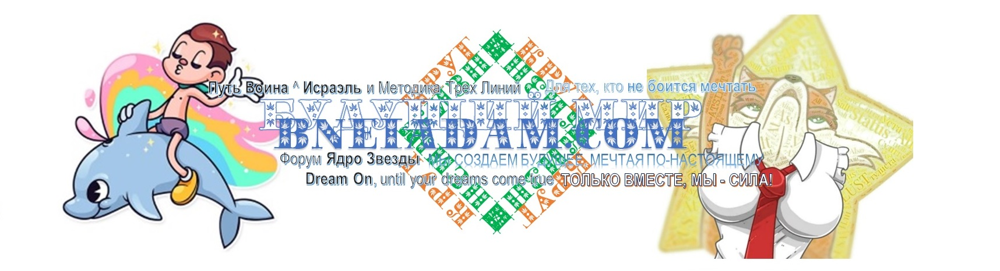

"Третье внимание" - это фиксация "точкой сборки", просто по факту настройки ее восприятия человеком этого мира, делающем это, подчиняясь Команде Орла, скрытого (Атик) от него Высшего управления его судьбой посредством Живого Глагола Духовной Половой Любви Творца, Свят Благословен Он, дающей любить себя человеку этого мира, и этим производя "сопряжение" между человеком и Творцом, Свят Благословен Он, давая обоим испытать и практически достигнуть того, что для них составляет суть и смысл Жизни, ради которой они живут, и дают Жить другим, кто стремится, и будет стремиться в Будущем к Жизни ради Любви, и к Любви ради полового наслаждения другого с женщиной НАГВАЛЬ, ЧЬЕ ТРЕТЬЕ ВНИМАНИЕ ЯВЛЯЕТСЯ ГЛАГОЛОМ ЛЮБВИ НАГВАЛЯ МУЖЧИНЫ, ФИКСИРУЮЩЕЙ ПЕРВОЕ ВНИМАНИЕ ЧЕЛОВЕКА ЭТОГО МИРА НА ВЫПОЛНЕНИИ ТОЙ ЦЕЛИ И ЗАДАЧИ, С КОТОРОЙ ОН БЫЛ СОЗДАН, И К КОТОРОЙ ВСЮ ЖИЗНЬ СТРЕМИТСЯ -Н-Е==О-Д-И-Н=